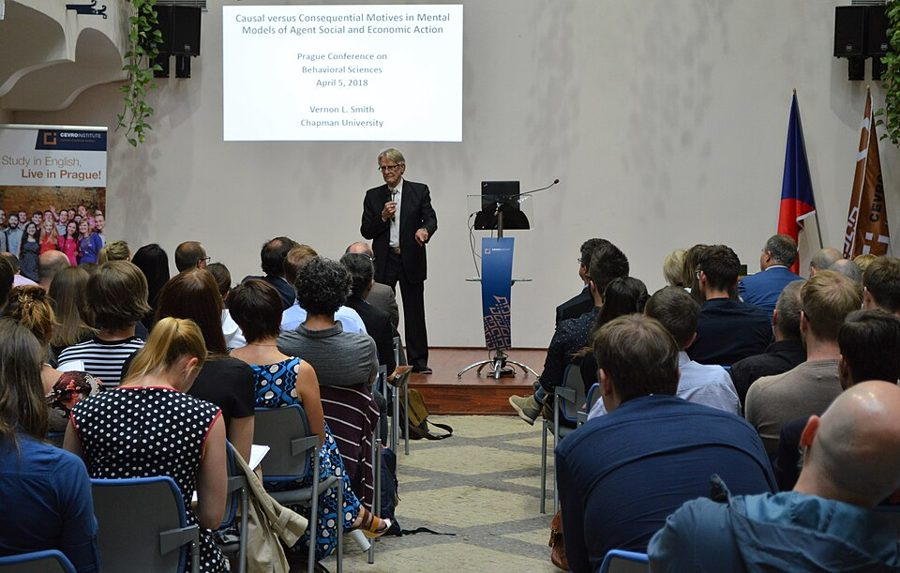
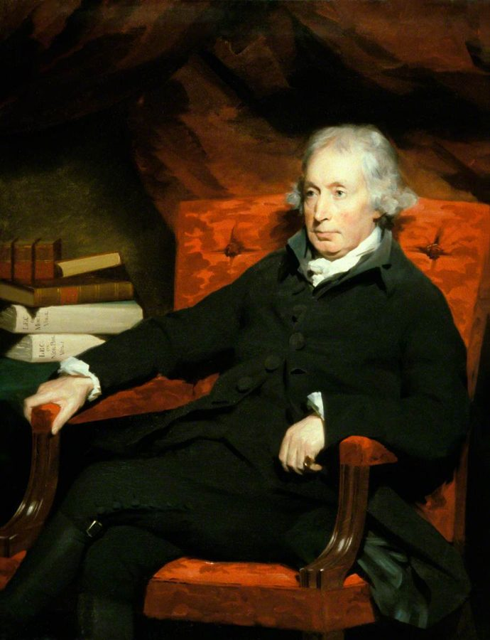
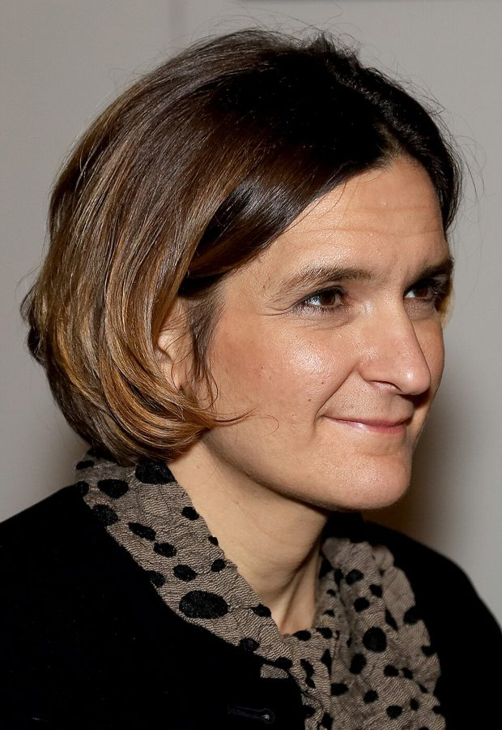
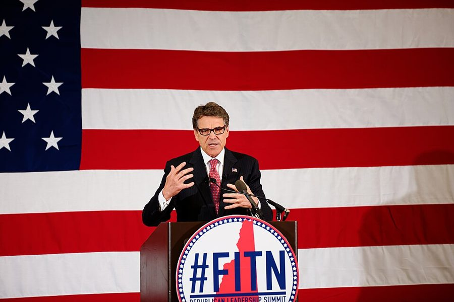

much more likely
… but is much more likely due to …
多半是因为
口气词：教育里试验少的原因（教师和家长政治力量大），是作者的推测，不是查证过的事实。
上一页看了犯罪和福利，这一页把巡视走完：教育（热门学校的名额抽签）、经济学（从教室里的模拟拍卖到穷国村庄里的田野试验）、政治学（竞选拉票的试验）。然后作者把第二部收成几条总结：做试验的方法里什么管用，社会政策里什么样的项目常常管用。读的时候抓两条线：每个领域的试验是被什么推进来的；总结里哪些是试验证明的，哪些是作者自己的归纳。

上一页停在福利试验：强制工作要求是少见的一致结论，作者也说环境变了还要再测（第 52 段）。这一页先巡教育、经济学、政治学，再在 §7 把第二部的试验经验收成三条方法、三条实质观察，其中好几处直接引用上一页的犯罪和福利结论（第 105–106 段）。择校的结论会成为第 15 章政策建议的依据（第 62–63 段）；最后两段转身，引出第三部：科学帮不上多少忙时，政治上怎么办。
§7「改环境，别改人」作者自己标为待检验的模式发现（第 97 段），后面几段却写得很肯定，而且只讲了一边：「改人」的项目也有站住的，比如 Perry 学前班的长期回报、降低再犯的认知行为疗法。见「本站怎么看」。
半个世纪的社会试验，究竟教会了我们什么？
读的时候带着这几个问题。不用先找答案，读完回来对照「检查一下理解」。
前三节照上一页的套路接着巡视，只是每个领域的入口不同：教育靠的是名额抽签这个历史的偶然，经济学起于一位教授的课堂游戏，政治学则是一位竞选策士拍板。§5 中间插进 Vernon Smith 和 Ferguson 的话，一下子从方法跳到了哈耶克式的谦卑，这是给第三部埋的线。§6 很短，最后一段明说它是前面各领域试验套路的缩影。§7 是第二部的总结：先申明下面全是模式发现，再列三条方法、三条实质；第 109 段起口气一变，从「社会科学会不会变成物理学」谈到「本质」，前半像报告，后半像随笔。
作者落在哪：各个领域都在重演同一个故事：多数新点子一测就不灵，成功的效果小，要有高层撑腰才推得动。他把经验归成三条方法、三条实质，并承认这些只是待检验的假设；社会科学很难变成物理学，我们只能边试边走，同时守住所珍视之物的本质。
这一页是原书第 12 章的后四节，粗体是本站给的节名，下面是原书这一节第一段开头的几个词，在 Kindle 里搜它就能跳过去（原书的小标题也在目录里）。每节标了档：「先读」不读就跟不上全书主线，「有空」好看但跳过不丢线。读完打个勾。
先把这一页用到、作者默认你懂的几个概念讲一遍。讲的是概念本身，作者拿它推出什么，读原书时自己看。前面讲过的社会试验、意向治疗、内部效度和外部效度、模式发现、整合的复杂性，点进去看。
美国的公立中小学（K–12）通常按住址分到学区里的学校。择校是让家庭自己挑学校、钱跟着学生走的一组办法。学券（voucher）：政府发一笔钱，家长拿去交私立学校的学费。特许学校（charter school）：用公共经费，由学区以外的机构按一纸「特许状」办，不受学区的很多规定和教师工会合同约束，办不好可以被收回特许。磁石学校（magnet school）：学区自己办的、有特色课程的公立学校，一般照常受工会合同约束。支持者说竞争能逼学校进步；反对者（多数教师工会和不少民主党人）说它抽走公立学校的钱和好学生，学券给宗教学校还牵涉政教分离。热门学校报名超额时要抽签，中签和落签的学生恰好是随机分出的两组，研究者就拿它当试验（见下图）。
在这一页：第 57 段给三种择校下定义；第 58–63 段讲抽签研究和它们的毛病；第 106、108 段作者又两次提到择校。
在教室或实验室里搭一个小市场来检验经济理论。典型做法是给受试者发卡片：买家的卡上写着心里最多愿付多少，卖家的卡上写着成本，让他们按规定的规则讨价还价，按成交结果付真钱，再看价格和成交量是不是落在供求理论预测的地方。它和心理学实验有两条不同的规矩：要用真钱激励，不许欺骗受试者。它最擅长检验「规则设计」，比如拍卖怎么出价、交易所怎么撮合，因为真实的拍卖行和交易所本来就是按明文规则运转的。程序员可以把它想成在测试环境里压测一套新协议。局限也明显：受试者多是大学生，钱数小、时间短，和真实世界的相似度有限。
在这一页：第 69–75 段讲它的起源和两条发现；第 76–79 段讲它为什么终究要拿到田野里检验。
在真实环境里、对真实的人做的随机试验，和实验室实验相对。比如在肯尼亚随机决定哪些学校先发驱虫药、哪些学校多配一位老师，比较学生的出勤和成绩；给选民寄不同的提醒信，比较投票率。它和商业里的 A/B 测试道理相通，只是场地换成政府和公益项目。长处是逼真，结论离真实决策近；短处是贵、慢，要和政府或机构合作，研究者能控制的东西少，结果仍然只代表那一时一地。经济学里它在 2000 年代快速兴起，2019 年诺贝尔经济学奖颁给 Banerjee、Duflo、Kremer，理由是「用试验的方法减轻全球贫困」。
在这一页：第 80–83 段：作者说它正成为经济学的主流，又说经济学的田野试验多在政府和公益的边上，核心经济里很少。
按在书里出现的顺序排，标题前是节号。只讲到读懂这一页需要的程度。
Thomas D. Cook 是西北大学的教育和方法学者，2001 年在 Education Next 上发表《恐惧科学》（Sciencephobia），说教育研究者很少用随机试验检验学校改革（第 54、56 段）。他找到的 1960–70 年代三项教育试验里，Perry 学前班最有名：密歇根州 Ypsilanti 的一批贫困黑人幼儿被随机分成两组，一组上高质量的学前班，之后追踪到成年。第 55 段的田纳西 STAR 试验从 1985 年秋的幼儿园开始，79 所学校、最终约 11,600 名学生被随机分进 13–17 人的小班、普通班或配助教的普通班。作者说据他所知，美国没有大规模地复现过它，对结果也有不同解读。
第 58 段的五地学券项目（纽约、华盛顿、Dayton、Milwaukee、Charlotte），名额不够时抽签。第 59 段的综述作者 Patrick J. Wolf，书里写成杨百翰大学（BYU）法学教授；他其实在阿肯色大学主持择校研究，那篇综述只是发在 2008 年的《杨百翰大学法律评论》上。第 63 段的特许学校研究，包括纽约（Hoxby 等）、哈莱姆（Dobbie 和 Fryer）、波士顿（Abdulkadiroğlu、Angrist 等）的抽签研究。波士顿的「试点学校」（pilot school）是学区内的公立学校，在预算、课程、人事上更自主，但仍在学区和工会合同的框架里，所以作者拿它和特许学校对比。
美国 2002 年的《教育科学改革法》在教育部下设立教育科学研究所（IES），第一任所长 Grover J. Whitehurst 从 2002 年 10 月干到 2008 年 10 月，他本是儿童心理学家。IES 的「有效做法信息中心」（What Works Clearinghouse，第 15 段）按证据等级审查教育项目，随机试验排在最上面。第 66 段的 14 种学前课程试验，就是 IES 资助的；作者在 §7 第 103 段把 Whitehurst 和上一页的 Stewart 并列，当作「鼓动者」的例子。
哈佛的 Edward Chamberlin 1948 年发表了他在课堂上做的模拟市场：价格并没有落在供求理论预测的地方，他拿这个说明市场不完美。学生 Vernon Smith 后来改了规则，让买卖双方都公开喊价，价格很快收敛到理论值附近，实验经济学由此起步（第 69、71 段）。第 75 段引的 Ferguson 那句话，出自他的《文明社会史论》，初版是 1767 年，书里的 1782 是作者用的第 5 版的年份。原句讲的是国家的种种建制，作者把它借来说市场；哈耶克也很爱引这句话。


第 80 段的「贫困行动实验室」（今天叫 J-PAL）设在 MIT，由 Banerjee 和 Duflo 等人创办，在发展中国家用随机试验评估扶贫、教育、卫生项目；到 2020 年前后，和它有关的教授累计做过和在做的随机评估超过一千项。Roland Fryer 在哈佛的 Ed Labs 做学校里的试验；芝加哥大学的 John List 在真实市场里做试验。第 82 段 Levitt 和 List 2009 年的综述说，经济学的田野试验大多和政府、非营利组织合作，所以落在核心经济的边上。
美国投票不强制，总统大选年的投票率约六成，中期选举更低，所以竞选的大头是把自己的支持者弄去投票，叫「催票」（get out the vote，GOTV）。第 87 段的 Gosnell 1920 年代在芝加哥寄提醒信，Eldersveld 1956 年做了第一次随机的拉票试验。耶鲁的 Green 和 Gerber 约 2000 年起大批做这种试验。他们和 Larimer 2008 年发表的一项密歇根试验很能说明第 89 段的「投票受社会环境影响」：给选民寄信，列出他们和邻居过去投没投票，投票率提高了 8.1 个百分点。第 85 段的 Elinor Ostrom（1933–2012）是政治学家，2009 年成为第一位获诺贝尔经济学奖的女性。

2006 年德州州长选举，在任的 Rick Perry 的首席策士 Dave Carney 让学者在竞选里做随机试验（第 90–92 段）。记者 Sasha Issenberg 后来把这段经历写进《胜选实验室》（The Victory Lab）。第 93 段那个「关键试验」后来发表在 2011 年的《美国政治学评论》上：竞选初期约 200 万美元的电视和电台广告，各个媒体市场哪天开播、播多少都随机决定，每天电话民调跟踪。广告播出那几周 Perry 的支持率明显上升，停播后一两周效果就几乎消失。
第 107 段说的护士家访项目，今天叫「护士家庭伙伴」（Nurse-Family Partnership）：护士从怀孕起定期上门，看望低收入的初产妇，一直到孩子两岁。它的设计者 David Olds 从 1977 年起在纽约州 Elmira 做随机试验，后来又在 Memphis 和 Denver 各做一次，三次都报告了一些正面结果。书后注释引的是 2011 年「循证政策联盟」的证据摘要，它把这个项目列为证据最强的一档。作者说这类成功的项目多是传统公共卫生措施的延伸。
按节排，每节前面是分节地图里的节名。标着「每个字都认识」的，是熟词生义、习语和反话，最容易读错。灰色的那几个字是原句里的位置，在 Kindle 里搜它就能找到。
All are pure pattern-finding, and therefore should be considered theories subject to verification— §7 第 97 段。本站译：这些全是纯粹的模式发现，所以应当看作有待验证的理论。
这是整个 §7 的保险丝，口气是自我约束。全书作者都在批评别人拿模式发现冒充可靠的预测；轮到自己做总结，他先把同样的标签贴在自己身上。关键词是 pure 和 subject to verification。读后面「改环境，别改人」时要一直记着这句，否则就会把一条待检验的经验法则，读成试验证明的定律。下一句他又说这番回顾值得一读，因为他没在别处见过这么宽的综述：谦虚和自信是同时在场的。
When we do science, we reject the Aristotelian idea of “essence,” but when we think about what we love, essence is everything.— §7 第 114 段。本站译：做科学时，我们抛弃亚里士多德的「本质」观念；可想到我们所爱的东西时，本质就是一切。
这句是全书的转折。前两部一直在讲怎样认识因果，用的是抛弃「本质」、只问「有没有效」的科学方法；这里作者说，政治不只是找有效的办法，还要守住一个社会之所以是它自己的那些东西。口气从分析变成了抒情。这为第三部的两个关键词埋下伏笔：试错要自由，但要有社会凝聚力兜着。别把它读成反科学：作者是在给科学的用途划边界。
读完这一页的几节再看。下面是作者在这几节里的论点，由本站按论点重新组织，不按原书的顺序；每条下面是依据所在的段落，拿不准就回书里那几段再读一遍。
学券和特许学校的名额抽签碰巧成了试验，多数分析说部分或全部学生受益。作者马上加限定：比的常是真去上学的人，要靠计量调整；幅度只有几个百分位；只适用于特定人群；放大后效果难料。他推断（appears）见效的关键是摆脱集体谈判协议，主张小步推进。
§4 第 57–63 段实验室和真实环境的相似度有限，经济学的因果密度又高，所以实验室结论不能直接搬到现实。它像风洞，适合反复筛选理论，最后要用田野里的随机试验来验证。田野试验正在进入经济学主流，但多在政府和公益的边上，真正大量做试验的是企业。
§5 第 76–83 段受控试验是科学进步的必要而不充分条件，能随机时随机化是最好的控制办法；作者用斜体说，在因果密度高的领域，评估具体项目没有一个领域里随机试验不是更优的方法。单次试验不能下结论，要独立复现；理论和试验都需要。试验会威胁既得利益，成功的机构都靠最高决策者撑腰、一位推手搭体系、把单次试验做便宜。
§7 第 99–103 段大多数犯罪、福利、教育项目通不过复现的试验，举证责任在主张者一方。在本来就多半失败的项目里，想提高技能和觉悟的又比改变激励和环境的更容易失败。真管用的办法效果多半是渐进的，原理常常朴素。作者申明这些全是模式发现、待检验的假设。
§7 第 97、105–108 段作者说他对「实验革命会把社会科学变成物理学」极度怀疑：因果密度太高，规律只能是条件很多的统计陈述；有些问题整体纠缠，根本没法试验。在科学能可靠预测人之前，只能靠试错和社会演化前进，同时守住我们所爱之物的本质。
§7 第 109–114 段合起来：社会科学可以靠多做试验变得更有用，但试验给出的多是条件很多、效果很小的局部结论，裁决不了大的政策争论。这正是导言五句论点里的第 2、3 句；靠试错、守住凝聚力，留给第三部。
第 12 章合起来：作者把随机试验在社会政策里的半个世纪摊开看。方法上，他承认 Heckman 对试验的批评都对，但要求非实验方法事先定死、再受将来试验的检验。结果上，一次试验靠不住，强制逮捕的复现一半灵一半更糟；大多数新项目经不起复现，少数站得住的结论（福利的强制工作要求、择校、整治滋扰），他也说还要接着复现、摸清条件。他把这些归纳成「对新项目要怀疑、改环境比改人有效、没有魔法」，又申明它们只是待检验的假设。社会科学离物理学还远，政治上只能靠试错往前走。
这本书 2012 年出版。下面挑出这一页里能被后来的研究检验的说法，分「书里 / 当时 / 今天」三栏，并给一个结论。结论判的是标题里「书里的说法：」后面那一句。全书的这一节汇总在对照今天。
读完作者的论点，再看它站不站得住。每一块摆出三样：主流怎么看，作者怎么看，本站的评论。最后一句是本站对这一页的总体判断。
主流看法：证据两边都有。「改人」里也有站住的：Heckman 等 2010 年重算 Perry 学前班，社会回报率约每年 7–10%；Lipsey 等 2007 年的系统评价说认知行为疗法能降低再犯。「改环境」也不是灵丹：DellaVigna 和 Linos 2022 年汇总美国两个政府「助推」小组的 126 项试验，平均效果只有 1.4 个百分点，远小于学术期刊上同类研究的 8.7。
作者的看法：提高技能和觉悟的项目，比改变激励和环境的更容易失败；他自己说这是模式发现（第 97、106–107 段）。
本站的评论：当一条经验法则有用，但分类松、样本小。工作要求、整治滋扰、择校这三个例子，正好都和作者第 15 章的主张同方向；Perry 学前班书里点了名（第 54 段），却没讨论它的结果；护士家访他承认是「改人」成功的例子，却用「多是传统公共卫生措施的延伸」轻轻带过，这个归类本身就有弹性。把它当待检验的假设，正如作者自己说的。
主流看法：方法学界大多同意随机试验的内部效度最好。但 Deaton 和 Cartwright 2018 年提醒，它推到别处要靠别的知识；2021 年诺贝尔奖表彰的自然实验方法，在劳动、教育、卫生等领域给出了大量可信的因果结论。货币政策、移民这类大问题，又往往根本没法随机。
作者的看法：原文用斜体说，没有一个高因果密度的领域，随机试验在评估项目上不是更优的方法（第 99 段）；他也说有些问题整体纠缠，根本没法试验（第 109–110 段）。
本站的评论：这句要连着它的范围读：for this task，指评估具体项目，不是回答所有社会科学问题。在这个范围里大体成立；「没有一个领域例外」仍说得太满，好的准实验在不少领域已经和随机试验互相印证。作者自己在第 109–110 段划的边界，比第 99 段那句斜体更值得记住。
主流看法：美国的择校之争两边都有扎实的研究。波士顿等城市特许学校的抽签研究显示，每年数学能提高约 0.2–0.5 个标准差；州级学券项目却出现了负面结果。特许学校之间差别很大，Dobbie 和 Fryer 2013 年发现，频繁反馈、用数据指导教学、高强度辅导、更长的上课时间、高期望这五种做法，能解释约 45% 的差别。
作者的看法：抽签证据显示择校能带来一些改进，值得小步推进；见效「看来」是因为摆脱了集体谈判协议（第 62–63 段）；择校不是灵丹妙药（第 108 段）。
本站的评论：作者对学券的保留很到位，第 60–61 段的冷水泼得准，第 15 章他还批评学券运动太教条。但「关键在摆脱工会合同」是推断，不是试验测出来的：同样不受合同约束的特许学校效果有好有坏，后来的研究更多把差别归给学校内部的做法。这条推断恰好通向他第 15 章的建议，读的时候把证据和主张分开。
本站的总体看法：方法上的总结（复现、事先定死、高层撑腰加独立推手）今天看大多站得住，作者给自己贴「模式发现」的标签也很诚实。实质结论要打折扣：「改环境，别改人」是有用的提醒，不是定律，例子又和作者的政策方向一致。最后几段对「社会科学变成物理学」的怀疑，十几年后看仍然稳妥。
先在心里答，再点开。答错的那题，回书里把对应那一节再读一遍。
他认为多半是教师和家长的政治力量比穷人和罪犯大，加上教育机构的意识形态，算是 Heckman 说的随机化偏差的放大版。他用的是 much more likely，是推测，没有给证据。
记录不全，缺的数据要用计量模型补；有的分析只比较中签又真转了学的学生，没有按意向治疗比，转学的人是自己挑出来的一群，又得靠计量方法修正。
效果一般只有几个百分位；只适用于住在城里、附近有学校可选、家里肯去申请、多为非裔或弱势的学生；如果推广到全市，学校的供需会变，效果可能大增也可能大减。
风洞便宜，可以在造真飞机前反复试，但最后还得真机试飞才能让乘客上去。实验室实验适合快速、反复地筛理论，因为它和真实环境不完全像，结论要到田野的随机试验里验证。
因为只试了一则广告，也许只是这则不好记。作者补充，投放时机、竞选激烈程度、同期别的媒体花费、市场大小都可能左右结果，要很多次试验才行，而且结论多半只适用于某一场竞选。
对新项目的效果要怀疑；改变激励和环境的项目比改变人的更可能成功；没有魔法，管用的办法多半只带来渐进的改进。他说这些全是纯粹的模式发现，是有待转成可检验假设的初步想法。
从物理到医学再到社会科学，因果密度越来越高、问题越来越整体纠缠，试验改造学科的力量越来越弱：物理被彻底改变；医学要靠统计试验，但还能假设生物反应大体一致；社会科学连推广都危险，有些问题根本没法试验。
想一想：为了减少线上事故，你的团队更常「改人」（培训、提醒、写规范）还是「改环境」（改流程、加自动检查、让出错更难）？哪一种真正起过作用？你的经验能算是证据吗，还是也只是模式发现？
读过又忘了，从这里想起来。挑的是这一页最值得记住的故事、人和说法，不按原书顺序；每条后面是节号，想细看就回书里那一节。全书各页的这一节都收在全书回顾。
一句话：各领域的社会试验重演同一个故事：多数新点子一测就不灵，成功的效果小；作者把它归成「对新项目要怀疑、改环境别改人、没有魔法」，并承认这些也只是待检验的假设。
热门学校名额不够就抽签，中签和落签的学生成了天然的两组。择校因此成了教育里唯一被反复随机检验的办法。
§4Wolf 汇总的 10 项学券分析里 9 项说有学生受益；作者紧接着提醒：幅度只有几个百分位，只对特定人群。
§4实验室实验是便宜的风洞，可以反复试；但要让乘客登机，还得真机试飞。经济学的结论终究要在田野里检验。
§5Perry 的策士 Carney 逼不情愿的竞选从业者接受试验：测一测就知道。没有他拍板，什么都不会发生。
§6改变激励和环境的项目，比提高技能和觉悟的更可能成功。作者自己说，这只是有待检验的模式。
§7真管用的办法原理很朴素：让警察去找闹事者常去的那家店的老板谈谈；有些人只有不再白拿钱，才会出门找工作。
§7